{kind=link}
Ship、Projectile、Weapon、option、通常／低速shotを組み合わせ、自機ごとの操作感と火力を設計できます。
CREATOR MANUAL / DEFINITION-DRIVEN SHMUP FOUNDATION
弾を設計し、敵を組み、
一本のゲームにする。
goat-shooootingは、自機、弾、武器、敵、弾幕、Stage、得点ルールをJSON Definitionで組み立てる2Dシューティング制作基盤です。ゲーム固有の内容をRuntimeから分離し、編集、即時確認、自動検証、配布までを一つの制作ループで進められます。
JSONゲーム内容を定義
60Hz決定的Simulation
LIVE編集を即時反映
QA検証・配布を自動化
QUICK GUIDE / WHAT YOU CAN DO
できること
小さな敵1体の調整から、複数Stage、独自の得点ルール、Training、Replayを備えた作品まで、同じDefinitionとproduction Runtimeを使って段階的に育てられます。
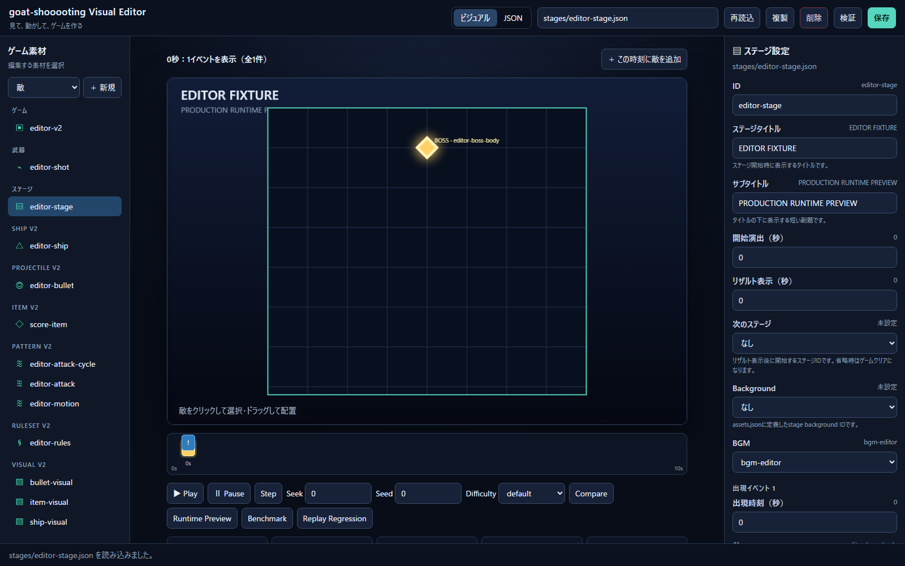
motion path、attack timeline、emitter、難易度tagを使い、敵の移動と発射をデータとして制作できます。
Wave、背景、BGM、warning、複数phase、timer、checkpoint、撃破条件をtimeline上で構成できます。
Item、graze、gauge、cancel、multiplier、rank、extend、bomb、continueをRuleSetで組み合わせられます。
sprite、animation、背景、effect、BGM／SE、日英文言、視認性設定を論理IDから差し替えられます。
Definition、参照、描画、Replay、負荷、simulationを自動検証し、self-contained buildを生成できます。
詳しく知りたいことから選ぶ
DOWNLOAD / PLAYABLE REFERENCE BUILD
制作例をダウンロードして触ってみる
ソースコードや.NET SDKを準備せず、Windowsですぐに起動できる参照buildです。最小構成のsample、縦長構成のgauntlet、独自RuleSetを組んだSYNC DRIVEを同じアプリで比較できます。
ZIPを展開
ダウンロードしたgoat-shooooting-samples-win-x64.zipを任意のフォルダーへ展開します。ZIP内から直接起動せず、先にすべて展開してください。
ゲームを起動
GoatShooooting.exeを実行します。self-contained buildのため、.NET Runtimeを別途インストールする必要はありません。
構成の違いを確認
タイトル画面でcontent packを切り替え、画面比率、敵の動き、弾幕、得点ルール、TrainingやReplayなど、Definitionから作られた違いを確認します。
01 / CREATOR SETUP
制作環境を準備する
ソースから制作する場合に必要なのは.NET 8 SDKです。まずDefinitionを読み込めることと、画面なしでもproduction Runtimeが動くことを確認します。
リポジトリへ移動
cd goat-shooootingglobal.json が利用するSDKを.NET 8へ固定しています。
依存関係を取得してビルド
dotnet restore
dotnet build goat-shooooting.sln警告もエラーとして扱われます。成功すればRuntimeとMonoGame版の両方が使用できます。
制作の土台を動作確認
dotnet run --project src/goat-shooooting.SampleGame -- --smoke-test既定のsample packを使い、Definition読込から敵の出現、射撃、衝突、撃破、Stage遷移までの制作基盤を自動で確認します。
02 / FIRST CREATION LOOP
最初の敵を作って、画面で確かめる
最初から大規模な作品を組む必要はありません。games/sampleを制作練習用の雛形にし、敵の性能を一つ変えて「編集 → 検証 → 試遊」の流れを通します。
変更する敵を選ぶ
games/sample/enemies/fighter-a.jsonを開きます。まずはhp、speed、scoreのように結果を見分けやすい値を一つだけ変更します。
{
"id": "fighter-a",
"hp": 45,
"speed": 110,
"weaponId": "enemy-homing",
"radius": 16,
"score": 250,
"movementPattern": "zigzag",
"movementAmplitude": 80,
"movementFrequency": 0.15
}Definitionを検証する
dotnet run --project src/goat-shooooting.Tooling -- validate games/sample値の範囲、重複ID、参照先、未知のプロパティを起動前に確認します。失敗時はファイルとJSON Pathを手掛かりに直します。
実際のゲームで手触りを見る
dotnet run --project src/goat-shooooting.SampleGame敵の硬さ、侵入速度、弾の読みやすさを操作して確認します。起動中に正常なJSONを保存すれば、Worldが再構築されて変更が反映されます。
一つの変更をゲームへ広げる
次はProjectileの速度、Weaponの発射間隔、Stageの出現時刻を順に変更します。各変更の間に検証と試遊を挟むと、意図しない難易度変化の原因を追いやすくなります。
目的に合う雛形を選ぶ
| コンテンツパック | 制作時の用途 | 確認できる設計 |
|---|---|---|
games/sample | 最初の変更とv1互換形式の理解 | Player、Bullet、Weapon、Enemy、2 Stageの最小ループ |
games/editor-v2 | schema v2とEditor操作の学習 | Ship、Projectile、Pattern、Boss、RuleSet、Difficulty |
games/gauntlet | 別の画面比率・テンポの比較 | 縦長playfield、3分割HUD、高速なWave |
games/sync-drive | 製品規模の参照実装 | 独自RuleSet、3自機、3難易度、5 Stage、ReplayとTraining |
03 / PRODUCTION WORKFLOW
一本のシューティングへ育てる基本手順
操作感から作り始め、攻撃、敵、Stage、作品固有のルールへ外側に広げます。参照される側を先に作ると、DefinitionのID関係を追いやすくなります。
01Ship / Projectile移動・当たり判定・弾
→
02Weapon / Pattern発射・軌道・時間変化
→
03Enemy / Boss耐久・移動・Phase
→
04Stage / RuleSetWave・得点・進行
- 核を決める：低速移動、graze、弾消しなど、プレイヤーが繰り返す判断を一つ決める。
- 最小戦闘を作る：Ship、Projectile、WeaponとEnemy 1体だけで操作感を確認する。
- 攻撃を時間で組む：motion／attack Patternとemitterから、予告、攻撃、隙を設計する。
- Stageへ配置する：出現時刻、位置、編隊、Boss phase、背景とBGMをtimelineへ並べる。
- ルールを接続する：Item、score、gauge、rank、extend、continueをRuleSetで作品の核へ結ぶ。
- 短く反復する：Editor preview、
validate、ホットリロード、Training checkpointで調整する。 - 作品として仕上げる：Visual、Audio、locale、アクセシビリティ、Replay、負荷と配布buildを確認する。
04 / DEFINITION MAP
Definition全体のつながり
game.jsonShip / RuleSet / Difficulty / Layout
ShipweaponIds / visualId
RuleSetstageIds / scoreRules
WeaponprojectileId / emitters
StageenemyId / bossId
Projectile / Pattern / Enemy / Boss弾・移動・攻撃・Phase
Runtimeはファイルを直接読みません。IDefinitionRepository がJSONを読み込み、DefinitionCatalog が全ID参照と値を検証してから、FactoryがEntityとComponentを生成します。
games/my-game/
├─ game.json
├─ ships/ projectiles/ items/
├─ patterns/ bosses/ rulesets/
├─ difficulties/ stages/
├─ visuals/ audio/ strings/
├─ assets.json assets/
└─ weapons/ enemies/
schema v2の主要Definition
Ship / Projectile / Item自機の速度・武器・option、弾の軌道とcancel属性、drop／回収効果を定義します。
Pattern / Enemy / Bossmotion path、attack timeline、emitterと、boss phaseのHP・timer・checkpoint・bonusを組みます。
RuleSet / Difficulty得点、gauge、multiplier、rank、continue、autobombと難易度倍率をcontent側で選択します。
Visual / Audio / assetssprite／animation、背景、effect、BGM／SE／Voice cueを論理IDから参照します。未指定packは従来のprimitive描画へfallbackします。
REFERENCE PACKS / RUN & COMPARE
制作例を起動して比較する
三つのpackは、同じRuntimeから異なるゲーム性と画面構成を作れることを確かめる参照実装です。制作したDefinitionの見え方や操作感を比べるときに使います。
Sampleを起動
dotnet run --project src/goat-shooooting.SampleGameGauntletを起動
dotnet run --project src/goat-shooooting.SampleGame -- --game gauntletSYNC DRIVEを起動
dotnet run --project src/goat-shooooting.SampleGame -- --game sync-drive↑ ↓ W Sメニュー選択
Enter Z決定
WASD移動
↑ ↓ ← →移動
Z Space発射
Left Ctrl低速移動／focus shot
CSpecial／SYNC DRIVE
X Shiftボム
Pポーズ／再開
R Enterリトライ
Esc終了
{kind=link}
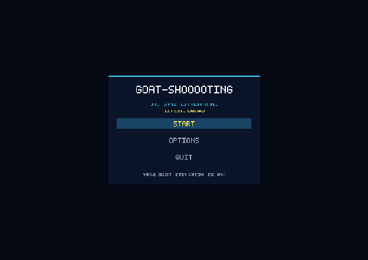
{kind=link}
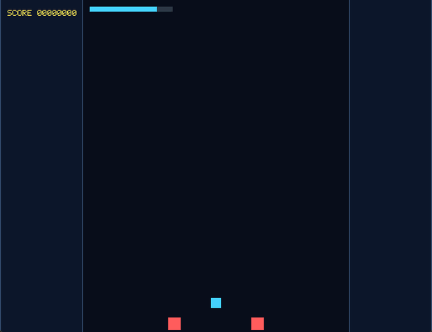
キーボードとゲームパッドのどちらでも全メニューとゲームを操作できます。画面下部の操作表示は最後に使ったdeviceと現在のbindingに追従します。SampleとGauntletは互換性確認用の既存packとして引き続き起動できます。
REFERENCE DESIGN / SIGNATURE RULE
実装例：独自RuleSetをゲームの軸にする
SYNC DRIVEは、かすり、接近攻撃、弾消し、Item回収、倍率を一つの得点ループへまとめた製品vertical sliceです。各機能を専用コードへ直結せず、Definitionから作品固有のルールを作る例として利用できます。
{kind=link}
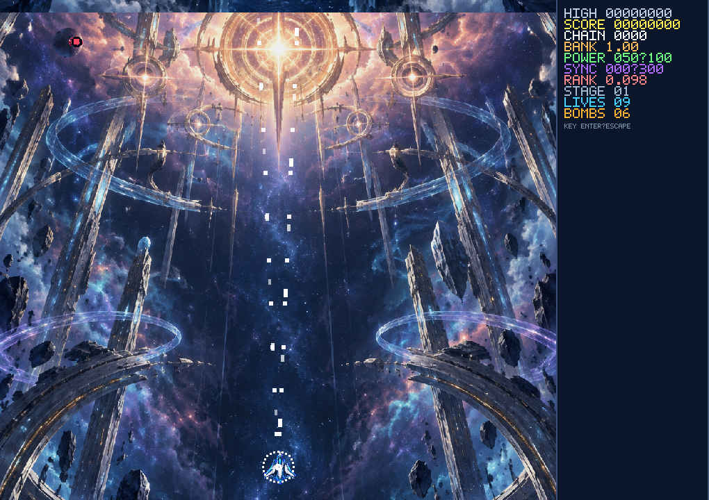
敵弾へのgraze、敵への接近攻撃、敵撃破、緑のshard回収で最大3 segmentを溜めます。
満タンの1〜3 segmentを消費します。消費量が多いほどDRIVE時間が延び、火力と得点効率が上がります。
DRIVE中のfocus shotはsoft弾をcancelします。hard／uncancelable弾とlaserは残るため、回避判断も必要です。
cancelで生まれたshardを画面上部のcollection lineより上で回収すると倍率をbankできます。
自機と難易度
- Vector: 広い範囲を安定して攻撃する標準機。
- Lancer: ショット長押しで前方の敵を最大4体ロックし、低速移動しながら4基のoptionから追尾弾を集中射撃する機体。
- Halo: optionによる交差射撃で位置取りを活かす機体。
- Novice: 初見向け。被弾時に条件を満たすとauto bombが作動します。
- Arcade: 標準の攻略・スコア設計です。
- Expert: 高速・高密度でrankの影響も強い上級者向けです。
REFERENCE DESIGN / MODES & RECORDS
実装例：練習・Replay・記録を作品へ組み込む
5ステージを通して攻略する通常runです。終了時に条件を満たした記録とReplayを保存します。
専用RuleSetで得点を競います。通常runとは別categoryとして記録されます。
stageまたはboss checkpoint、power、残機、ボム、rank、gauge、無敵、slow、hitboxを選べます。
通常runの入力と検証情報を保存し、0.25〜4倍速、pause、hitbox表示付きで再生できます。
game／mode／difficulty／shipごとにscore順で保持し、結果画面から対応Replayを再生できます。
best score、設定、解除状態をschema付きで保存し、旧versionは読込時に移行します。
REFERENCE DESIGN / PRODUCT OPTIONS
実装例：設定とアクセシビリティを用意する
作品側で利用できる製品設定の実装例です。タイトル／ポーズのOPTIONSで変更し、閉じたときにschema v3設定へ保存します。選択中の音量と視認性はその場でpreviewされます。
Displaywindowed／borderless、window scale、VSyncを設定します。
Language日本語／Englishを切り替えます。INFORMATION、HUD、メニューも同じlocaleを使います。
AudioMaster、BGM、SE、Voice、muteを個別に調整します。deviceやcueがない場合はsilent／procedural fallbackで継続します。
Visibility画面揺れ、flash、particle、背景輝度、敵弾outline／palette、HUD scaleを調整できます。
Controls振動とkeyboard bindingを変更できます。項目でEnter／Aを押して新しいキーを入力し、Esc／Bで取消します。
Preset低モーション、高コントラスト、大きなHUDなど、複数設定をまとめたアクセシビリティpresetを適用できます。
05 / GAME & LAYOUT
画面レイアウトとスコア位置
width と height は常にプレイ領域のサイズです。HUDパネルはその外側に加わるため、レイアウトを変更しても敵の座標や当たり判定は変化しません。下記はv1互換形式で、v2ではRuleSet、Difficulty、Ship、Stage routeのID一覧と既定値もgame.jsonで選びます。
PLAYFIELD
full
パネルなし。従来どおり画面全体をプレイ領域にします。
PLAYFIELDHUD
touhou
プレイ領域＋右パネル。東方Projectのような左右2分割です。
HUDPLAYFIELDHUD
donpachi
左パネル＋中央プレイ領域＋右パネル。怒首領蜂型の3分割です。
{
"playerId": "player-one",
"stageId": "stage-01",
"width": 800,
"height": 720,
"screenLayout": "touhou",
"hudPanelWidth": 220,
"scorePosition": "right-panel"
}| フィールド | 値 | 意味 |
|---|---|---|
playerId | Player ID | 開始時に生成するプレイヤー |
stageId | Stage ID | 開始するステージ |
width / height | 1以上 | プレイ領域のピクセルサイズ |
screenLayout | full / touhou / donpachi | 画面分割方式 |
hudPanelWidth | 120〜600 | 1枚あたりのサイドパネル幅 |
scorePosition | 下記4種 | スコアの表示先 |
playfield-top-leftplayfield-top-rightleft-panelright-panel
06 / PLAYER
Playerを設定する（v1互換）
{
"id": "player-one",
"lives": 2,
"bombs": 2,
"bombDamage": 50,
"speed": 260,
"weaponId": "player-basic",
"x": 400,
"y": 650,
"radius": 14,
"invincibilitySeconds": 1
}- lives
- 残機。省略時は2、1以上。
- bombs
- ボム数。省略時は2、0以上。
- bombDamage
- 全Enemyへ与えるボム威力。省略時は50。
- speed
- 1秒あたりの移動距離。
- weaponId
- プレイヤーが使うWeapon。
- x / y
- 開始位置。左上が原点。
- radius
- 円形Colliderの半径。
- invincibilitySeconds
- 被弾後の無敵時間。0も可。
残機とボムの動作
01X または Shiftを押す
→
02全Enemyへ
→
bombDamage03Enemy Bulletを全消去
→
04ボム残数を1減らす
被弾1回につき残機を1減らし、残機が0になるとGame Overです。ボムはキーを押した瞬間に1回だけ発動するため、長押ししても連続消費しません。残数が0の場合は発動せず、Player Bulletには影響しません。
{kind=link}
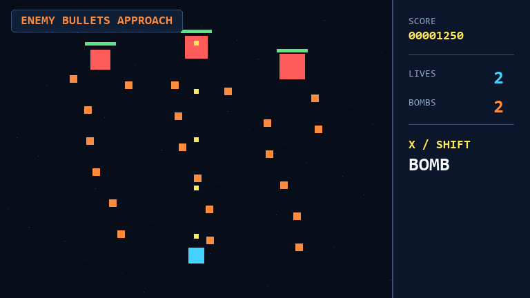
07 / ENEMY
Enemyを設定する（基本／v1互換）
移動パターンはEnemyごとに選べます。どのパターンもspeedで下へ進み、sineとzigzagは生成位置を中心に左右へ動きます。
{kind=link}
{kind=link}
{kind=link}
同じ振れ幅・振動数で比較した5.5秒のループGIFです。クリックすると原寸で動きを確認できます。
{
"id": "midboss",
"hp": 150,
"speed": 8,
"weaponId": "enemy-double-washer",
"radius": 28,
"score": 2000,
"movementPattern": "sine",
"movementAmplitude": 120,
"movementFrequency": 0.08
}| フィールド | 必須 | 意味 |
|---|---|---|
id | はい | コンテンツパック内で一意のID |
hp | はい | 耐久力 |
speed | はい | 下方向への基本速度。0で停止 |
weaponId | いいえ | 省略すると射撃しない |
radius | はい | 当たり判定半径 |
score | いいえ | 撃破点。既定値100 |
movementPattern | いいえ | straight、sine、zigzag |
movementAmplitude | sine/zigzag時 | 左右の振れ幅 |
movementFrequency | sine/zigzag時 | 1秒あたりの往復回数 |
08 / BULLET
Bulletの性能と軌道（v1互換）
{kind=link}
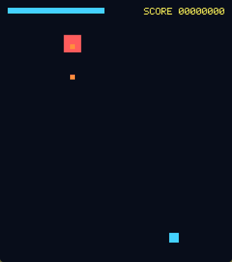
straight
生成時の方向を保って直進します。既定値です。
{kind=link}
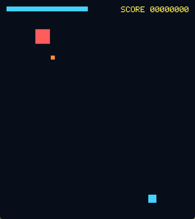
homing
対象レイヤーで最も近いEntityへ、最大旋回速度の範囲で向きを変えます。
{
"id": "enemy-homing-shot",
"speed": 90,
"damage": 2,
"radius": 7,
"lifetime": 8,
"movementPattern": "homing",
"homingTurnDegreesPerSecond": 75
}| フィールド | 範囲 | 調整の効果 |
|---|---|---|
speed | 0より大きい | 弾速。速い追尾弾は避けにくい |
damage | 1以上 | 命中時のダメージ |
radius | 0より大きい | 当たり判定と描画サイズ |
lifetime | 0より大きい | 画面内に残れる秒数 |
movementPattern | straight / homing | 移動方式 |
homingTurnDegreesPerSecond | 0超〜1440 | 小さいほど緩く、大きいほど強く曲がる |
09 / WEAPON
Weaponと弾幕パターン（基本／v1互換）
Weaponは「どのBulletを、何秒おきに、どの方向へ何発出すか」を決めます。同じBulletでもWeaponを分ければ、別の弾幕として再利用できます。
{kind=link}
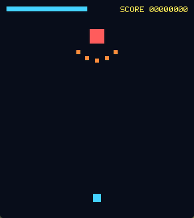
spread
基準方向を中心に扇状へ等間隔で発射。
{kind=link}
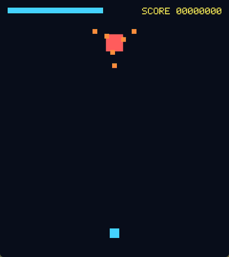
washing-machine
渦の腕を回転し、一定回数で左右を反転。
{kind=link}
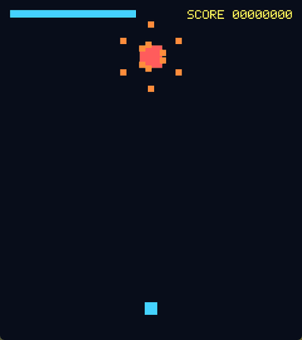
double-washing-machine
互いに逆回転する二層を同時発射。
すべて実際のRuntimeから撮影した5.5秒のループGIFです。クリックすると原寸で動きを確認できます。
扇状弾
{
"id": "enemy-fan",
"bulletId": "enemy-shot",
"cooldown": 1,
"projectileCount": 5,
"spreadDegrees": 60,
"firePattern": "spread"
}二層式洗濯機
{
"id": "enemy-double-washer",
"bulletId": "enemy-shot",
"cooldown": 0.45,
"projectileCount": 2,
"firePattern": "double-washing-machine",
"rotationDegreesPerShot": 11,
"rotationSwitchShots": 18
}| フィールド | 意味 |
|---|---|
bulletId | 発射するBulletのID |
cooldown | 発射間隔。0にすると毎フレーム発射するため注意 |
projectileCount | spreadでは同時弾数、洗濯機系では渦の腕数 |
spreadDegrees | spreadの扇角。0〜180度 |
rotationDegreesPerShot | 洗濯機系が1回の発射ごとに回る角度 |
rotationSwitchShots | 回転方向を反転するまでの発射回数 |
10 / STAGE
StageでWaveを組む（基本／v1互換）
{
"id": "stage-01",
"title": "THE SILENT HORIZON",
"subtitle": "IDEAL RELEASE",
"openingDuration": 3,
"resultsDuration": 4,
"nextStageId": "stage-02",
"events": [
{
"time": 3,
"type": "spawn-enemy",
"enemyId": "scout",
"x": 240,
"y": 120,
"count": 2,
"spawnInterval": 0.25,
"spacingX": 320
},
{
"time": 60,
"type": "spawn-enemy",
"enemyId": "midboss",
"x": 400,
"y": 90,
"isBoss": true
}
]
}{kind=link}
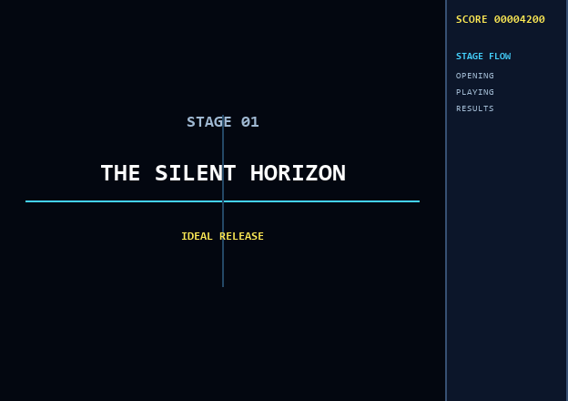
開始演出中とリザルト中は戦闘が停止します。次ステージでは残機・ボム・累計スコアを引き継ぎます。
- title / subtitle
- 開始演出へ表示するタイトルと短い副題。
- openingDuration
- タイトル演出の秒数。省略時は0。
- resultsDuration
- ボス撃破後にステージ別／累計スコアを表示する秒数。
- nextStageId
- リザルト後に開始するStage。省略したStageで全ステージクリア。
- isBoss
- trueのイベントで出現した敵をすべて倒すとリザルトへ進む。
0sScout ×2FighterBoss60s
- time
- ステージ開始から何秒後に出現を始めるか。
- enemyId
- 生成するEnemy。
- x / y
- 最初の1体の出現座標。
- count
- 同じイベントで生成する数。既定値1。
- spawnInterval
- 2体目以降を時間差で出す間隔。
- spacingX
- 2体目以降へ加算する横間隔。
11 / HANDS-ON
実践：追尾弾を混ぜたボスを作る
4つのJSONを追加・編集するだけで、新しいボスをStageへ投入できます。
Bulletを作る
games/sample/bullets/boss-homing.json を作り、前章の追尾弾を貼り付けます。最初は speed: 80、旋回速度 60 程度が安全です。
Weaponへ載せる
{
"id": "boss-homing-fan",
"bulletId": "boss-homing",
"cooldown": 1.2,
"projectileCount": 3,
"spreadDegrees": 35
}Enemyへ持たせる
{
"id": "homing-boss",
"hp": 250,
"speed": 0,
"weaponId": "boss-homing-fan",
"radius": 30,
"score": 5000
}Stageへ配置する
{
"time": 65,
"type": "spawn-enemy",
"enemyId": "homing-boss",
"x": 400,
"y": 100,
"isBoss": true
}検証して試す
dotnet run --project src/goat-shooooting.Tooling -- validate games/sample
dotnet run --project src/goat-shooooting.SampleGame12 / DEFINITION EDITOR
ブラウザEditorで調整する
dotnet run --project src/goat-shooooting.Tooling -- editor games/editor-v2既定では http://127.0.0.1:5078 を開きます。v1に加えてShip、Projectile、Item、Pattern、Boss、RuleSet、Difficulty、Visual、Audio、sprite／animation manifestを一覧・作成・複製・削除できます。
LIBRARYShipPatternBossRuleSetStageAssets
PREVIEW
PROPERTIES値を編集参照を選択説明を確認
- ビジュアル：nested formと参照selectで、motion control point、attack timeline、emitter、boss phaseを編集。
- JSON：細かな編集や一括貼り付けが必要なときだけ使用。
- Preview：Play／Pause／Step／Seek、seed変更、difficulty比較、score trace、弾数とspawn budgetを確認。
- 検証：保存せず、Definition、capability、visual／audio asset、localeをまとめて確認。
- 保存：検証成功時だけファイルを安全に置換。
- 回帰：10,000 projectile benchmarkと同seed二重実行のReplay Regressionを起動。
13 / HOT RELOAD
起動したままDefinitionを反映
SampleGameはJSON内容のハッシュを毎フレーム確認します。正常な変更を保存するとDefinitionとWorldを再構築し、レイアウト変更時はウィンドウサイズも更新します。
保存JSON更新
→
検知内容ハッシュ比較
→
検証全参照を確認
→
RestartWorld再構築
不正な変更はゲームへ適用されません。最後に正常だったDefinitionで動作を続け、エラー内容をウィンドウタイトルへ表示します。
14 / QUALITY GATE
保存前・コミット前の確認
Definition検証
dotnet run --project src/goat-shooooting.Tooling -- validate games/sample
dotnet run --project src/goat-shooooting.Tooling -- validate games/gauntlet
dotnet run --project src/goat-shooooting.Tooling -- validate games/sync-drive描画契約
dotnet run --project src/goat-shooooting.Tooling -- render-smoke games/sample
dotnet run --project src/goat-shooooting.Tooling -- render-smoke games/gauntlet
dotnet run --project src/goat-shooooting.Tooling -- render-smoke games/sync-driveBuild／全テスト
dotnet build goat-shooooting.sln
dotnet test goat-shooooting.slnProduction経路
dotnet run --project src/goat-shooooting.SampleGame -- --smoke-test
dotnet run --project src/goat-shooooting.SampleGame -- --game gauntlet --smoke-test
dotnet run --project src/goat-shooooting.SampleGame -- --game sync-drive --smoke-test製品QA
dotnet run --project src/goat-shooooting.Tooling -- release-qa games/sync-drive書式
dotnet format goat-shooooting.sln --verify-no-changes失敗ケースも守る
新しい挙動には成功例だけでなく、不明ID、未対応パターン、0以下の値、不可能なレイアウト組み合わせなどの失敗テストも追加します。テスト名は期待する振る舞いが読める文章にします。
CREATOR GUIDE / RELEASE
配布用の製品ビルドを作る
PowerShellのpublish scriptが、三content packの検証、Release test、製品QA、self-contained win-x64 publish、公開exe smoke、権利表示とasset検査、symbol分離、ZIP／SHA-256作成を順に実行します。
./build/Publish-Game.ps1artifacts/publish/win-x64SDKを入れていないWindows環境でも起動できる公開用ファイルです。
artifacts/packages配布ZIPと対応するSHA-256 checksumを生成します。
BUILD-ID.txtユーザー報告と配布package versionを結び付けます。
docs/release実GPU、長時間play、controller hot-plug、複数環境など、人が完了させるrelease checklistを管理します。
GitHub Releaseで配布する
v1.2.3のようなタグをpushすると、GitHub Actionsが同じpublish scriptを実行し、検証済みのWindows ZIPとSHA-256をGitHub Releaseへ添付します。正式versionのReleaseには固定名goat-shooooting-samples-win-x64.zipも添付され、上のダウンロードボタンが自動的に最新版を指します。-rc.1などハイフンを含むタグはpre-releaseとして公開されます。
git tag v1.2.3
git push origin v1.2.315 / ARCHITECTURE
コードの責務
Definitions
静的設定のrecord、JSON読込、ID参照と値の検証。Runtime stateを持たない。
Core
Entity、Component、Worldの状態。MonoGameへ依存しない。
Runtime
Factory、System、headless-capableなシミュレーション。ファイルAPIを直接使わない。
Framework
MonoGame入力・描画・音。RuntimeのRenderItemを画面へ変換する。
SampleGame / Tooling
起動エントリーポイントとDefinition制作支援。
JSON Definition → IDefinitionRepository → DefinitionCatalog
↓
Factory → Entity + Component
↓
Input → ShootingSimulation → System更新 → RenderSystem snapshot → MonoGame16 / EXTENDING
新しい弾の挙動を追加する
例として、時間とともに加速する accelerating Bulletを追加する場合の変更点です。
- DefinitionModels
BulletDefinitionに必要な静的パラメーターを追加する。 - DefinitionCatalog対応名と数値範囲を検証し、未知の値は明示的に失敗させる。
- JSON Schema
schemas/bullet.schema.jsonへenum、型、既定値、説明を追加する。 - Component加速度など、弾ごとに変化するRuntime stateをCoreへ置く。
- BulletFactoryDefinitionから該当ComponentをEntityへ追加する。
- System更新ロジックをRuntimeのSystemへ実装する。Component自身へUpdateを書かない。
- ShootingSimulation意図した順序でSystemを呼ぶ。衝突前か移動前かを明確にする。
- Editor日本語ラベル、選択肢、条件付きフィールド、プレビューを追加する。
- Tests軌道、Factory変換、Definition失敗、サンプル読込を保護する。
- Sample JSON実際に遊べる控えめな値から追加し、smoke testを通す。
新しい弾幕形状を増やす場合は、Weapon側の静的設定、WeaponHolderComponent の発射状態、WeaponSystem の方向生成を同じ順序で拡張します。
17 / BUILD HISTORY
ここまでに追加した機能
Definition駆動のMVP
Player、Enemy、Bullet、Weapon、Stageと、headlessでも動くProduction Runtimeを構築。
弾幕のバリエーション
追尾弾、左右反転する洗濯機、逆回転する二層式洗濯機を追加。敵の weaponId だけで使い分け可能に。
スコアHUD
画像フォントを必要としない5×7ピクセル文字で、スコアをゲーム画面へ表示。
画面レイアウト
full、東方型2分割、怒首領蜂型3分割を追加。プレイ座標を維持したままHUDパネルを外側へ配置。
制作マニュアル
操作、Definition、実践手順、拡張方法を目的別に確認できるマニュアルを整備。
マルチステージ進行
タイトル演出、ボス撃破リザルト、ステージ別／累計スコア、次Stageへの自動遷移をDefinition化。
決定的RuntimeとDefinition v2
固定tick、入力command、Replay hash、Ship／Projectile／Item／Pattern／Boss／RuleSet／Difficultyとv1 memory migrationを追加。
弾幕・得点・製品フロー
motion／attack timeline、boss phase、graze／cancel／item、multiplier／rank、menu、設定、gamepadを統合。
モードと記録
RunConfiguration、Score Attack、Training、Replay、profile、category別local leaderboard、migrationと破損隔離を実装。
製品presentationと制作環境
sprite／背景／effect、audio／locale／accessibility、production Simulationを使うDefinition Editor v2を完成。
SYNC DRIVE vertical sliceと配布候補
3自機×3難易度、5 stage／15 boss phase／40 pattern、製品QA、self-contained package、権利・privacy資料を整備。公開判定には手動release gateの完了が必要です。
18 / TROUBLESHOOTING
困ったとき
Unknown definition id と表示される
weaponId、bulletId、enemyId などの参照先が存在しません。大文字・小文字も区別されます。対象フォルダーのJSONに同じ id があるか確認してください。
unsupported movement / fire pattern と表示される
対応する文字列と完全一致していません。Enemyは straight / sine / zigzag、Bulletは straight / homing、Weaponは spread / washing-machine / double-washing-machine です。
スコア位置とレイアウトのエラーが出る
left-panel は donpachi だけ、right-panel は touhou または donpachi で使用できます。パネルなしならプレイ領域の左右上を選びます。
弾がすぐ消える
画面外へ完全に出た弾は削除されます。lifetime が短すぎないか、Weaponが意図した方向へ発射しているかも確認してください。
二層式で弾が多すぎる
二層式の同時弾数は腕数の2倍です。projectileCount を1へ下げるか、cooldown を長くしてください。
JSONを保存しても反映されない
不正なDefinitionは最後の正常状態へロールバックされます。ウィンドウタイトルのDEFINITION ERROR、またはToolingの validate 結果を確認してください。
Replayを再生できない／途中で不一致になる
Replayに記録されたcontent hash、engine version、run configurationが現在の環境と一致するか確認してください。不一致Replayは誤った再生を続けず、互換性エラーとして停止します。
設定やランキングの保存データが壊れている
破損JSONは上書きせず.invalid-{UTC timestamp}へ隔離し、空の状態から回復します。隔離fileは調査が終わるまで削除しないでください。
ゲームパッドを外したら操作できない
keyboard入力へ切り替えられます。再接続後に任意のbuttonを押すとactive-device表示が更新されます。割り当てはOPTIONSで確認してください。
音声deviceがない／一部の音が鳴らない
audio初期化失敗やmissing cueではsilent／procedural fallbackへ切り替わり、Simulationは継続します。まずMaster／BGM／SE／Voiceとmuteを確認してください。
MonoGameのウィンドウを開けない
OpenGL対応環境を確認してください。CIやGUIのない環境では --smoke-test を使えます。
一致する項目がありません
別のキーワードで検索してください。例：